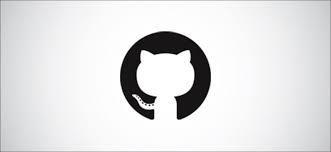

LinkedIn

GitHub
Gabriel Salomon
Desarrollador Web
Datos Generales
Fecha y lugar de nacimiento:
13.02.1996, Argentina.
Edad:
25 años
Dirección:
Av. Larrazabal 3094. Capital Federal, Villa Lugano.
Teléfono:
(011) 15 5612-7555
Email:
gabrielsalomon023@hotmail.com
Desarrollador Full Stack
Maquetación
HTML5, CSS3.
Flexbox, Grid.
Preprocesadores: Sass, Less.
Bootstrap.
Responsive web design.
Front-end
Java Script, JQuery.
React basado en Hooks.
Redux, Socket.io.
Sistema MERN.
Back-end
Java Script, Node JS, Express, Type Script.
PHP, Laravel, Symfony.
Bases de datos
SQL, MYSQL.
Mongo DB.